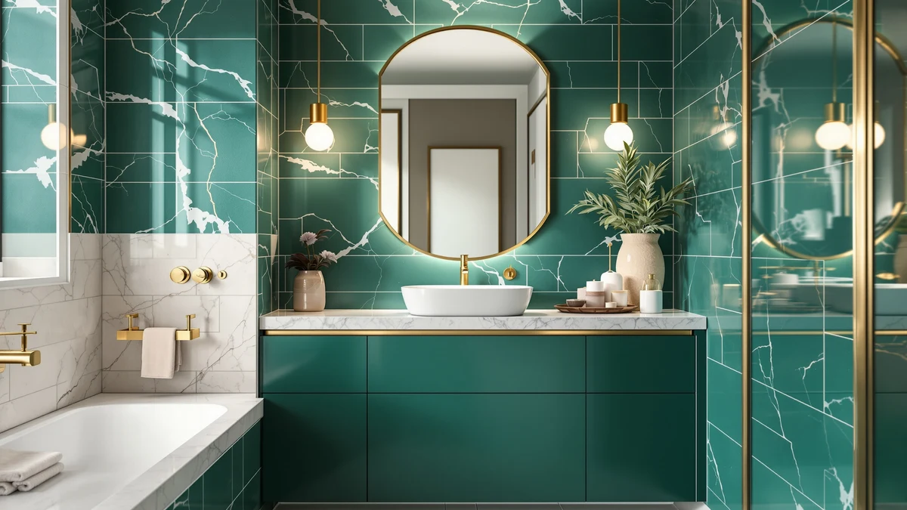

GeeBom Under Sink Organizer Review (2026): Worth It?
Prices and picks verified as of November 2026. Independent, reader-supported reviews.


Quick Answer
This geebom under sink organizer review compares the GeeBom Under Sink Organizer Pull against a near-duplicate GeeBom listing, the Akxomel Rattan cabinet and the Homhedy storage cabinet. For most people who need a pull-out tray that slides directly into an under-sink cabinet, the GeeBom is the strongest fit of the four, since the other two options are freestanding pieces built to stand on the floor instead.
Our pick: GeeBom Under Sink Organizer Pull — $46.79 Check Price on Amazon
Bottom line: our top pick is the GeeBom Under Sink Organizer at $46.79.
Things to Know Before You Buy
- This geebom under sink organizer review covers two separate GeeBom listings that share the same name, dimensions and design, priced two cents apart.
- The GeeBom Under Sink Organizer Pull measures 11.8"W x 15.9"D, with a height that adjusts between 13.8 and 16.9 inches. Measure your cabinet's clearance above the drain trap before you order.
- The Akxomel Rattan Small Bathroom Cabinet and the Homhedy Small Bathroom Storage Cabinet are both freestanding pieces, not under-sink inserts, so they solve a different storage problem than the GeeBom.
- If a fixed 11.8-inch width doesn't match your cabinet, see our roundup of under-sink bathroom organizers for more size options.
- Anyone on a tighter budget should check our under-sink organizers under $50 list, since all four products here land between $44.99 and $46.79.
This geebom under sink organizer review exists because an under-sink cabinet is one of the least standardized spaces in a bathroom, and a pull-out tray that doesn't match your cabinet's width or the clearance above your drain trap ends up unused in a closet instead. We compared the GeeBom Under Sink Organizer Pull against a second GeeBom listing sold under a different ASIN, plus two freestanding cabinets from Akxomel and Homhedy, to see which one actually solves the under-sink storage problem and which ones are better suited elsewhere in the bathroom.
For most people shopping specifically for an under-sink pull-out, the GeeBom Under Sink Organizer Pull is the pick in this comparison. Its 2-tier metal slide-out shelf is built to go inside the cabinet, and at $46.79 it costs about the same as the near-identical second GeeBom listing. The Akxomel and Homhedy cabinets, by contrast, stand on the floor rather than inside a cabinet, so they answer a different need. Keep reading for the full breakdown of what each product gets right and where it falls short.
Why You Should Trust Us
We don't own or install every product covered in this geebom under sink organizer review. Ilane Tall covers bathroom storage and small-space organization for Best Bathroom Storage, and our process is the same across every article on this site: we research current listing prices, stated dimensions and materials, then read through verified owner reviews for recurring patterns, good and bad. We do not run a fake testing lab, and we don't claim to own products we haven't purchased.
Our Research Experience
We did not install the GeeBom Under Sink Organizer Pull, the second GeeBom listing, the Akxomel cabinet or the Homhedy cabinet in a bathroom for this geebom under sink organizer review. Instead, we compared each listing's stated dimensions and current price, then analysed patterns in verified owner reviews for recurring complaints, such as a shelf that won't hold its height setting or hardware that's awkward to align during assembly. We cross-checked pricing against each seller's own listing so the figures here reflect what you'd actually pay. Reviewers consistently note that the GeeBom's metal frame holds up better under load than the thin plastic trays sold for the same spot, a pattern that shows up across both GeeBom listings.
Overview & Specs

GeeBom Under Sink Organizer Pull
What we like
- The 2-tier metal slide-out shelf pulls straight out of the cabinet, so you can see and reach items without crouching or digging past whatever sits in front
- A height range of 13.8 to 16.9 inches covers most standard under-sink cabinets without the drain trap forcing an awkward fit
- At $46.79, it costs about the same as the second GeeBom listing below, so you're not paying extra for a near-identical frame
Flaws but not dealbreakers
- The 11.8-inch width is fixed rather than adjustable, so it won't expand to fill a wider cabinet opening
- Reviewers consistently note that assembly hardware needs careful alignment, a common complaint across both GeeBom listings
| Material | Metal / wood |
| Size | 11.8"W x 15.9"D x 13.8-16.9"H |
GeeBom built the Under Sink Organizer Pull around the two constraints every under-sink cabinet shares: a drain trap that eats into usable height, and a door opening that limits how wide a tray can be. The 2-tier metal slide-out shelf keeps its footprint at 11.8 inches wide by 15.9 inches deep, while the height adjusts between 13.8 and 16.9 inches to work around the trap rather than against it. That adjustability is the main thing separating it from a fixed-shelf tray in this geebom under sink organizer review.
At $46.79, the organizer sits within two cents of the second GeeBom listing covered later in this review, and well below the Akxomel and Homhedy cabinets' footprint if you only need the space under the sink rather than a full standing cabinet. Owners report the metal frame stays rigid once loaded with cleaning supplies and toiletries, though the included hardware takes a bit more care to align during setup than a single-piece plastic bin would.
What We Liked
Across the four products in this geebom under sink organizer review, the GeeBom Under Sink Organizer Pull answers the under-sink storage problem more directly than the Akxomel or Homhedy cabinets, since it's the only one of the four built to slide inside a cabinet rather than stand next to it. The height-adjustable range of 13.8 to 16.9 inches works around an uneven drain trap better than a fixed shelf would, and owners report the metal frame holds its shape once loaded. The second GeeBom listing offers the same frame and nearly the same price, so either one works if the first happens to be out of stock.
What Could Be Better
Neither GeeBom listing in this geebom under sink organizer review publishes an exact weight limit per shelf, which makes it harder to plan for heavier items like a full detergent jug or a stack of cleaning bottles. The 11.8-inch width is fixed, so a cabinet narrower or wider than that opening won't get a flush fit. Assembly hardware also comes up often enough in owner reviews that you should budget a few extra minutes to align the shelf brackets correctly the first time.
Who Is It For?
This geebom under sink organizer review points toward the GeeBom Under Sink Organizer Pull if your cabinet's drain-trap clearance falls between 13.8 and 16.9 inches and you want a tray that pulls straight out rather than one you have to lift and shuffle around pipes. It's a poor match if your real bottleneck is overall bathroom storage rather than the space under one sink, in which case the freestanding Akxomel or Homhedy cabinets below address a different part of the room entirely.
Alternatives to Consider
We also looked at three other storage options for this geebom under sink organizer review: a second GeeBom Under Sink Organizer Pull listing priced two cents below the first, the Akxomel Rattan Small Bathroom Cabinet, and the Homhedy Small Bathroom Storage Cabinet. The latter two are freestanding pieces rather than under-sink inserts, so they trade the GeeBom's cabinet fit for a different spot in the bathroom entirely.

Editor's Pick
GeeBom Under Sink Organizer Pull
A second GeeBom Under Sink Organizer Pull listing with the same 2-tier metal frame and the same 11.8"W x 15.9"D x 13.8-16.9"H size, priced two cents below the first at $46.77. Treat it as the same organizer sold under a separate Amazon listing rather than a distinct product, and buy whichever one is in stock or priced lower on the day you order. If this listing happens to be out of stock when the first one isn't, you lose nothing by switching.
$46.77
Check Price on Amazon
Best Value
Akxomel Rattan Small Bathroom Cabinet
The Akxomel Rattan Small Bathroom Cabinet skips the under-sink cabinet entirely. It's a freestanding, rattan-paneled piece meant to stand on the floor beside a toilet or vanity, at $45.99, about a dollar less than the GeeBom. Consider it if your under-sink cabinet is already full or too shallow for a pull-out tray and you'd rather add storage somewhere else in the bathroom. It isn't a direct substitute for either GeeBom listing, since it doesn't go inside a cabinet at all.
$45.99
Check Price on Amazon
Premium Choice
Homhedy Small Bathroom Storage Cabinet
The Homhedy Small Bathroom Storage Cabinet is the cheapest of the four products in this geebom under sink organizer review at $44.99, and like the Akxomel, it's a freestanding cabinet rather than an under-sink insert. It suits a narrow gap next to a toilet or in a corner more than the space under a sink. Pick it over the GeeBom if your priority is closed-door storage for towels and toiletries somewhere else in the room.
$44.99
Check Price on AmazonIs the GeeBom Under Sink Organizer Pull worth buying over the second GeeBom listing?
Both GeeBom Under Sink Organizer Pull listings share the same name, the same 11.8" x 15.9" x 13.8-16.9" dimensions and sit two cents apart, $46.79 and $46.77.
Can the GeeBom Under Sink Organizer Pull fit a narrow bathroom cabinet?
At 11.8 inches wide and 15.9 inches deep, it fits most standard under-sink cabinets, though its height only adjusts between 13.8 and 16.9 inches.
Frequently Asked Questions
Is the GeeBom Under Sink Organizer Pull worth buying over the second GeeBom listing?
Both GeeBom Under Sink Organizer Pull listings share the same name, the same 11.8" x 15.9" x 13.8-16.9" dimensions and sit two cents apart, $46.79 and $46.77. Treat them as the same organizer sold under two Amazon listings and buy whichever one is in stock or cheaper on the day you order.
Can the GeeBom Under Sink Organizer Pull fit a narrow bathroom cabinet?
At 11.8 inches wide and 15.9 inches deep, it fits most standard under-sink cabinets, though its height only adjusts between 13.8 and 16.9 inches. Measure the space above your drain trap before you order, since that range won't stretch to fit a taller gap.
Do the Akxomel and Homhedy cabinets go under the sink like the GeeBom organizer?
No. Both the Akxomel Rattan Small Bathroom Cabinet and the Homhedy Small Bathroom Storage Cabinet are freestanding pieces meant to stand on the floor, typically beside a toilet or vanity, rather than slide into the cabinet space beneath a sink.
Final Verdict
This geebom under sink organizer review comes down to one question: do you need storage that fits inside a cabinet, or next to one? For anyone whose drain-trap clearance falls between 13.8 and 16.9 inches, the GeeBom Under Sink Organizer Pull is the right call, with a metal frame that owners report holds up well and a price that lands within two cents of the near-identical second GeeBom listing. If your cabinet is already full or the wrong shape, the freestanding Akxomel Rattan or Homhedy cabinets solve a different storage problem for a few dollars less.